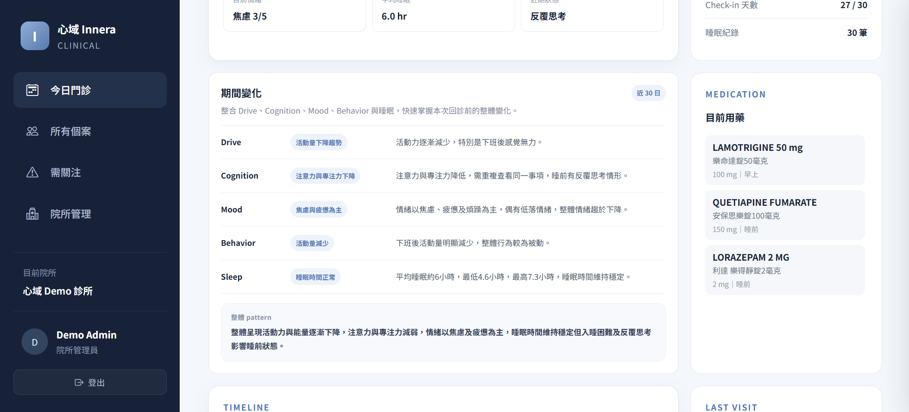
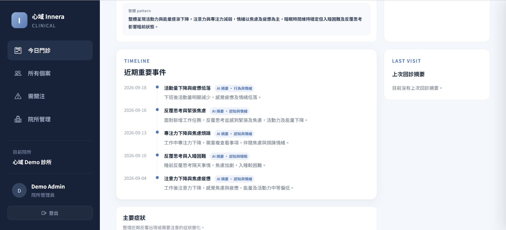
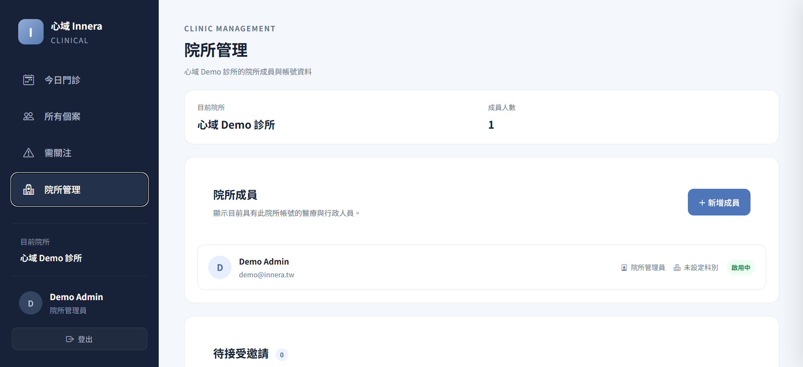

RECORD
日常留下紀錄
情緒、症狀、睡眠、用藥與生活事件， 在發生時逐步留下。
心域不是在回診前才開始整理。 日常中的情緒、症狀、睡眠與用藥變化， 會隨著持續記錄逐漸形成脈絡， 再由使用者授權帶進醫療端。
RECORD
情緒、症狀、睡眠、用藥與生活事件， 在發生時逐步留下。
ORGANIZE
將分散紀錄整理為期間變化、 近期事件與可回顧的資訊。
CONNECT
讓醫療人員在門診中， 更快找到值得進一步詢問與討論的變化。
從本診次個案，到一段時間內的變化與重要事件， Innera Clinician 將不同紀錄放回時間脈絡中閱讀。
今日門診優先呈現本診次已連結心域的個案， 並顯示近期狀態、情緒、睡眠與值得注意的變化， 減少在不同資訊之間來回尋找。
系統依據有足夠資料支持的紀錄整理期間變化， 並將不同面向放在同一個畫面中， 協助快速理解這段時間發生了什麼。
AI 整理內容提供資訊整理與回顧， 不作為診斷或臨床判斷的替代。

近期重要事件以時間軸呈現， 保留事件發生的先後關係， 讓情緒、睡眠與生活變化不只剩下一個平均值。

心域希望 AI 做的是降低資訊整理成本， 而不是替醫療人員做出診斷。
期間變化以實際紀錄為基礎； 沒有足夠資料支持的面向，不為了填滿欄位而產生結論。
若資訊來自日記或自然語言內容， 應與結構化紀錄區分， 避免被理解成客觀量測結果。
系統協助找到值得進一步了解的變化， 最終仍由醫療人員結合完整臨床資訊進行評估。
從個案授權、角色權限到不同院所之間的資料隔離， 系統在資訊流動之外，也需要清楚定義誰能看到什麼。
使用者完成與院所的連結後， 才能依授權設定共享相關資訊。
臨床資訊依角色限制存取， 院所行政管理與個案臨床資料分開處理。
不同院所的資料與成員權限分離， 停用帳號後即失去系統存取權。
院所管理功能負責成員與院所設定； 個案的臨床資訊則依醫療角色限制存取， 避免管理權限等同於臨床資料權限。

Innera Clinician 目前持續進行功能驗證與醫療端交流。 如果您對臨床應用、合作測試或產品導入有興趣， 歡迎與我們聯繫。